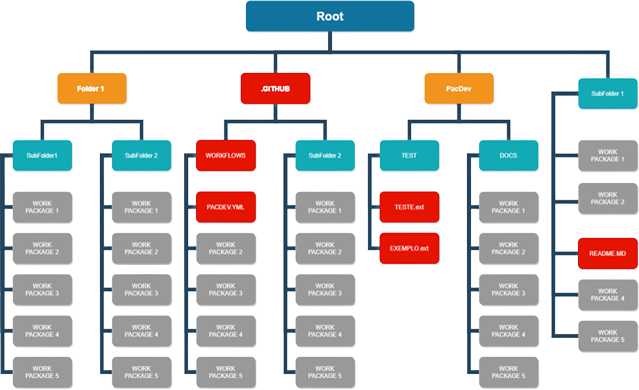

<div  class="containter-content">
    <mat-card>
        <mat-card-title>Requirements</mat-card-title>
        <div class="row mt-5">
            <div class="col">
                <ul>
                    <li>Repository link of GitHub</li>
                    <li>Access allowed to user  Pacdev.Tcc.Unicamp</li>
                    <li>Readme.md of test that will be developed</li>
                    <li>Folder named PacDev containing Test.ext file and Example.ext file</li>
                    <li>Folder github containing Workflow subfolder with PACDEV.yaml file</li>
                  </ul>
            </div>
            <div class="col ">
                <ul>
                    <li>Directory Structure:</li>
                  </ul>
                

            </div>
            
        </div>
    </mat-card>
</div>